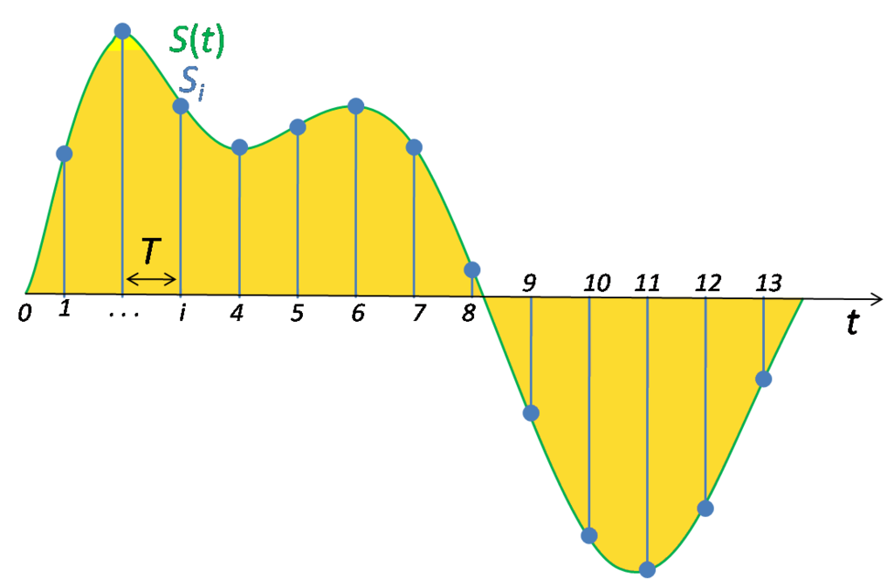

Haskell School of Music
张宇宁 @
SJTUG
## 问题 - 程序如何描述音乐？ - 类型是什么？它为什么对程序语言而言是重要的？
## 两种层次 - signal-level - note-level
## signal-level  (Not today's topic)
## note-level  (Today's topic)
## 从简单程序开始 ```haskell (1 + 3) ** 2 ```
```haskell (1 + 3) ** 2 ... (1 + 3) ** 2 ... (1 + 3) ** 2 ... (1 + 3) ** 2 ... (1 + 3) ** 2 ```
Don't repeat yourself!
## 起名字 ```haskell res = (1 + 3) ** 2 pi = 3.1415926 ```
## 同一个值可以有不同的名字 ```haskell concertA = (A, 4) -- 440Hz a440 = (A, 4) ```
## 还有重复 ```haskell pi * (1 ** 2) pi * (2 ** 2) pi * (3 ** 2) pi * (4 ** 2) pi * (5 ** 2) ```
## 函数 ```haskell area r = pi * (r ** 2) -- 定义 area 3 -- 应用 => pi * (3 ** 2) ```
## Untyped lambda calculus 
## 程序中的值 - 1, 2, 3, 4, 5, 6, 7 ... - 'a', 'b', 'c', 'd' ...
## 类型 ```haskell 1 :: Int 2 :: Int 'a' :: Char 'b' :: Char ```
## 思考 ```haskell 1 + 1 1 + 'a' -- ??? ```
## 类型描述了值的性质
## 函数也是值，也有类型 ```haskell area :: Double -> Double area r = pi * (r ** 2) ```
## 目的 > 用程序语言的方式对音乐进行抽象 => 定义 Music 类型
## 方式 - 自顶向下 - 自底向上 <--
## 基本元素：音符 - 时值 - 音高
## 时值 ```haskell type Dur = Rational ```
## 休止符 ``` data Primitive = Rest Dur ```
## 音高 ```haskell type Pitch = (PitchClass, Octave) type Octave = Int data PitchClass = Cff | Cf | C | Dff | Cs | Df | Css | D | Eff | Ds | Ef | Fff | Dss | E | Ff | Es | F | Gff | Ess | Fs | Gf | Fss | G | Aff | Gs | Af | Gss | A | Bff | As | Bf | Ass | B | Bs | Bss ```
## 补上音符定义 ```haskell data Primitive = Note Dur Pitch | Rest Dur ```
## 重新思考 - 没有音高：鼓，三角铁... - 额外的信息：强弱(ppp, pp ... ff, fff)等
## 怎么办 为每种需求重新定义一个音符类型？
## 多态数据类型 ```haskell data Primitive a = Note Dur a | Rest Dur ```
## The Music Type
 ```haskell Prim (Primitive a) ```
 ```haskell Music a :+: Music a ```
 ```haskell Music a :=: Music a ```
## 最终的结果 ```haskell data Music a = Prim (Primitive a) -- primitive value | Music a :+: Music a -- sequential composition | Music a :=: Music a -- parallel composition ``` （递归类型）
## Thanks, it's Q&A time! 更多程序语言知识，敬请加入SJTUG
 SJTUG
SJTUG